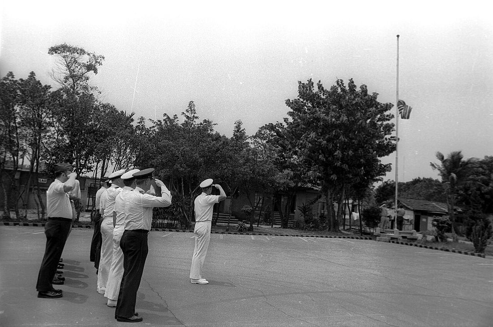
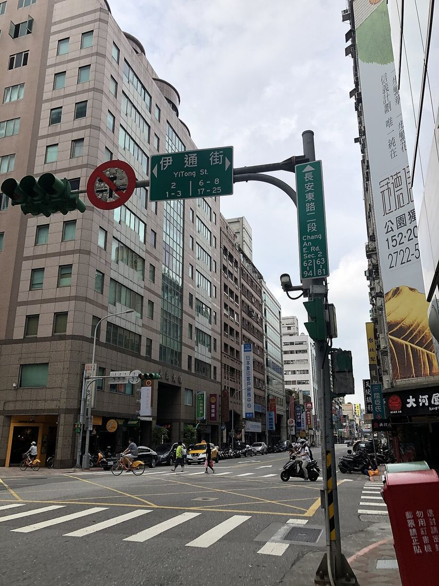
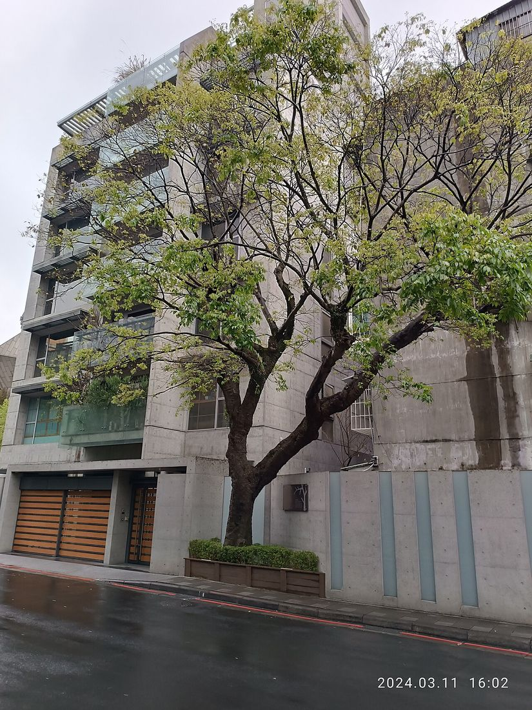

台北老店
20 家有故事的台北咖啡館，照街區排好。每一家都有完整故事、歷史照片、地址和現況；有的已經歇業，我們也寫出原址在哪。
大稻埕與城中
老台北的第一批咖啡館，從日治時期一路開到今天。


西門町
防空洞、蜂蜜行、隔壁兩家同年開的老店。


公館溫羅汀
書店、地下室和唱片，大學生的咖啡館。
中山與東區
美軍年代的味道、冠軍的吧台、每家都烘豆的連鎖。

中山北路的美軍年代
台北市立美術館那一帶，七十多年前，是一片美軍營區。
亞里士餐廳｜營業中
Fika Fika 陳志煌
北歐有一場烘豆比賽，沒有評審，由兩百多位業界人士盲測投票。二〇一三年，拿下冠軍的是一位台灣人。
Fika Fika Cafe｜出發前先確認
王策：台灣的世界手沖冠軍
十五克粉、兩百五十毫升水、兩分鐘。這是一杯世界冠軍手沖。
VWI by CHADWANG｜出發前先確認
cama：每家店都烘豆的連鎖
有一家連鎖咖啡店，每一家門市都放著自己的烘豆機。
CAMA COFFEE ROASTERS 豆留文青｜營業中
湛盧：把手沖端到桌邊
二〇〇二年失業，買下倒閉公司留下的一台咖啡機。二十年後，一年賣八百萬包濾掛。
湛盧咖啡 大安店｜營業中城市日常
超商和平價咖啡，台北人每天喝的那一杯。
天母、士林與民生社區
第一家星巴克、最老的貓咖啡、樹蔭下的咖啡街。